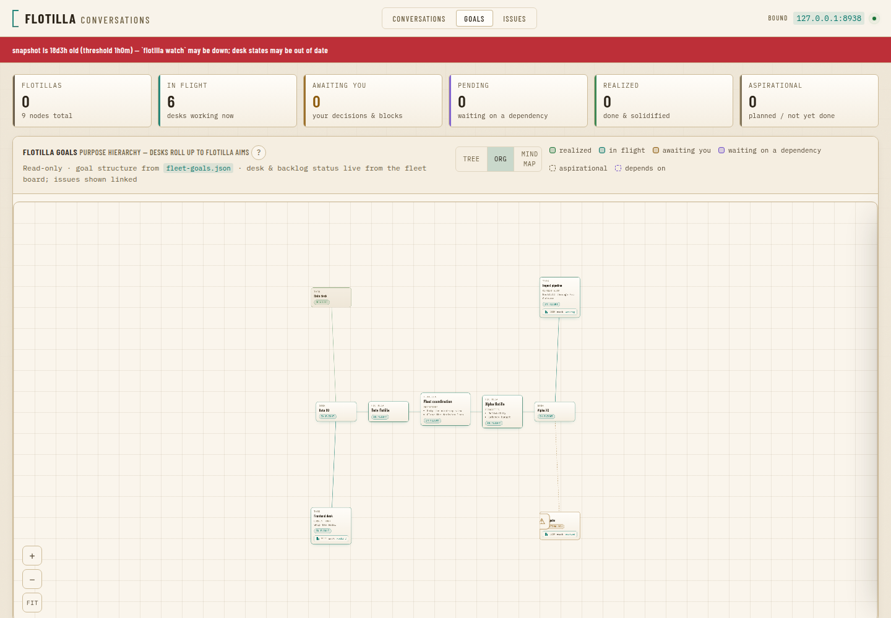
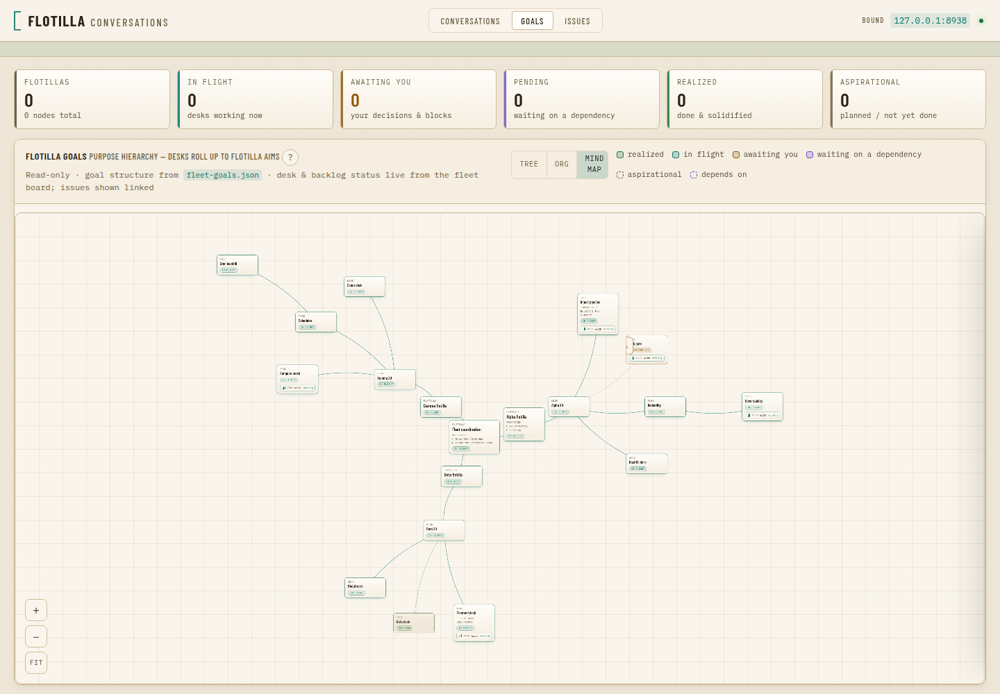

Inaugural Parade — Independence Day
🇺🇸 The whole story, from git init to today.
One hub, one month: 240 commits, 239 merged pull requests, 32 days — June 2 to July 4, 2026.
This is the flotilla product's own parade. The live fleet that dogfoods it marches in the reflection, never by name.
The founding idea — June 2
It began with a LICENSE and a one-line promise:
"Coordinate a fleet of AI coding agents from a single hub — with a durable, auditable record of everything they say to each other."
The diagnosis was simple: run several long-lived coding agents and you become the message bus — shuffling between terminals, holding the org chart in your head, leaving no record. flotilla's bet was to build the coordination layer on substrate you already have — a terminal multiplexer and a chat channel.
Era I — Birth: the send, and the clock that never stops
The first two pull requests are the whole heartbeat of the product.
- #1 —
send: deliver an instruction by typing it into an agent's pane, and mirror every message to a chat channel. Injecting the text is the wake — nothing to poll. The audit trail was a first-class feature from commit one. - #2 —
watch: the inbound relay plus a self-continuing hub clock — the executive officer that checks in on its desks every tick without a human turning the crank. - Then the clock got smart: directive heartbeats (#3), an operator-facing outbound path (#12), and a change-detector that wakes only on a material change (#22) instead of burning cycles.
Era II — Many harnesses, one fleet
An early architectural bet: don't marry one agent. PR #21 put Claude Code behind a Driver abstraction, byte-for-byte identical — and then the fleet learned to speak to everyone:
aider(#52) ·opencode(#56) ·grok(#59) ·Codex(#259)- Inter-harness pull-only messaging (#64) and secure push-to-hub for "smart" desks (#66) — agents of different make, coordinating in one fleet.
The promise sharpened: drop-in agentize the harness you already run, don't replace it.
Era II½ — The fleet learned to speak aloud
A three-day sprint gave flotilla a voice: a SpeechProvider + speech-to-text/text-to-speech driver (#36), a first-party Opus codec binding (#38), and the live voice command, service, and runbook (#45) — live Discord voice chat with the fleet, fail-closed and cost-metered. Proof the substrate bet scaled past text.
Era III — Federation and the Chief of Staff
As fleets grew past one hub, flotilla grew a hierarchy. PR #105 gave each flotilla its own channel and a fleet-command return leg; PR #109 introduced the Chief of Staff — a coordinator-of-coordinators with a context mirror. Mechanical channel provisioning (#119) and one XO hubbing multiple channels (#123) made the org chart real infrastructure, not a diagram. Up-and-down federation: a meta-coordinator over project coordinators over desks.
Era IV — The Dash: a native window into the fleet
The chat channel was the audit trail; the dashboard became the operator's cockpit. Built in phases off its design (#122):
- Phase 1 — a read-only command-and-control web surface (#124)
- Phase 2 — a native, GitHub-backed issue tracker (#125)
- Phase 3 — a live control surface with an operator note, on a cross-process pane lock (#126, #129)

Era V — Doctrine became mechanical
The hardest lesson of the month: a promise to "do better" is not enforcement — plumbing is. flotilla turned its operating hard-won rules into installed, mechanical doctrine:
- An installable constitutional skillset + the Rule of Three span-of-control (#137)
- No-self-merge as a doctrine member — the review is the merge gate (#144)
- A mechanical detector that breaks the "idle-hold" antipattern (#223)
- The Flotilla Operating Principles, shipped as an installed constitution (#233)
Every correction became a gate, a fail-closed path, or a corrected default — never a note-to-self.
Era VI — Resilience and a portable coordinator seat
A fleet that runs unattended must heal itself and never depend on one vendor:
flotilla switch— cross-harness desk failover (#203) and auto-switch workers off a sustained rate-limit storm (#228)- A pluggable Transport bus (#188) that later carried the live dashboard as a first-class ingress (#199)
- Adaptive heartbeat cadence — a policy engine that speeds up and slows down with the work (#247)
- A harness-portable coordinator seat, so the XO/CoS role runs on Codex or grok too (#261, #263)
Era VII — Goals: the fleet's purpose, made visible
The dash learned to show not just what desks are doing but why. The Goals view (#277) rendered the fleet's purpose hierarchy live; contract edges compiled from YAML (#281) and a pan/zoom Fleet Situation Map (#282) turned it into a navigable map; the org-graph v2 (#315, #316) added a hub-and-spoke org layout, harness badges, priorities, and milestones.

The last 48 hours — the operator-feedback storm
July 3–4 was a transformation: the operator lived in the product and the fleet answered every note, same-day.
- Warm-light theme as the default (#332) — a design-book evolution; the cockpit stopped looking like every other AI dashboard.
- A decision brief inside the respond modal (#348), auto-triggered for operator-gated goals (#352) — because "a bare 'waiting on you' label is not decidable."
- The executive mini-brief — a sixth constitutional member (#239) — every operator-facing message leads with a plain-language bottom line.
- Reader-modeled the landing page and the docs (#328, #344) — write to the reader's mental map, or it's slop.
The last 48 hours — the parade and the mind-map
Two capabilities that made today possible:
- The parade formation — an operator-triggered fleet ceremony (#336), later given its own archive page served by the dash (#373). This very deck is the first parade to march from the init commit.
- A mind-map layout for the goals map (#364), tuned to stay overlap-free at real depth (#377) — the fleet's purpose, finally legible at a glance.
The shape of the product today
An honest inventory of what ships, right now:
- Coordinate any mix of harnesses — Claude Code, grok, aider, opencode, Codex — from one hub, with
send, a self-continuing adaptive clock, andnotifyfor operator replies. - Federate across flotillas with a Chief of Staff over project XOs over desks (#105, #109).
- See it all in a native dashboard — fleet map, issue tracker, live goals graph, and conversation threads.
- Trust it: installed constitutional doctrine, no-self-merge review gates, cross-harness failover, and a public/private firewall so a private deployment never leaks into a public repo.
Voice, mirrors, recycle, and the parade round it out. It is a real product, dogfooded daily on a live fleet.
What the fleet looks forward to
The roadmap the operator's own feedback is already pointing at — every item an open issue:
- Ceremony context isolation (#382) — run parades, product-walks, and demos in fork/ephemeral sessions so a ceremony can't poison a working desk's context.
- A knowledge-management system (#131) — unify the fleet's fragmented memory stores behind one internal/external partition.
- Mechanical mastery walks (#369) — daemon-scheduled per-coordinator product walks, feeding findings back into memory.
- A running-but-not-producing detector (#374) and an operator-intent yardstick (#379) — liveness measured by output, and delivery gated against the operator's verbatim ask.
One hub, one month, one fleet
From a LICENSE on June 2 to a self-hosting, self-healing, self-documenting fleet-coordination product on July 4 — 240 commits, 239 merged pull requests, and a doctrine that turns every lesson into plumbing.
Happy Independence Day. The fleet is gated on nothing. o7